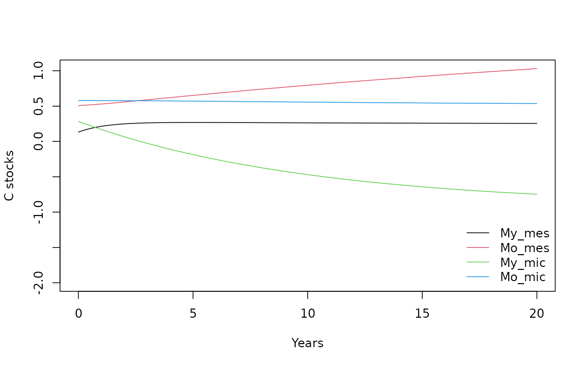
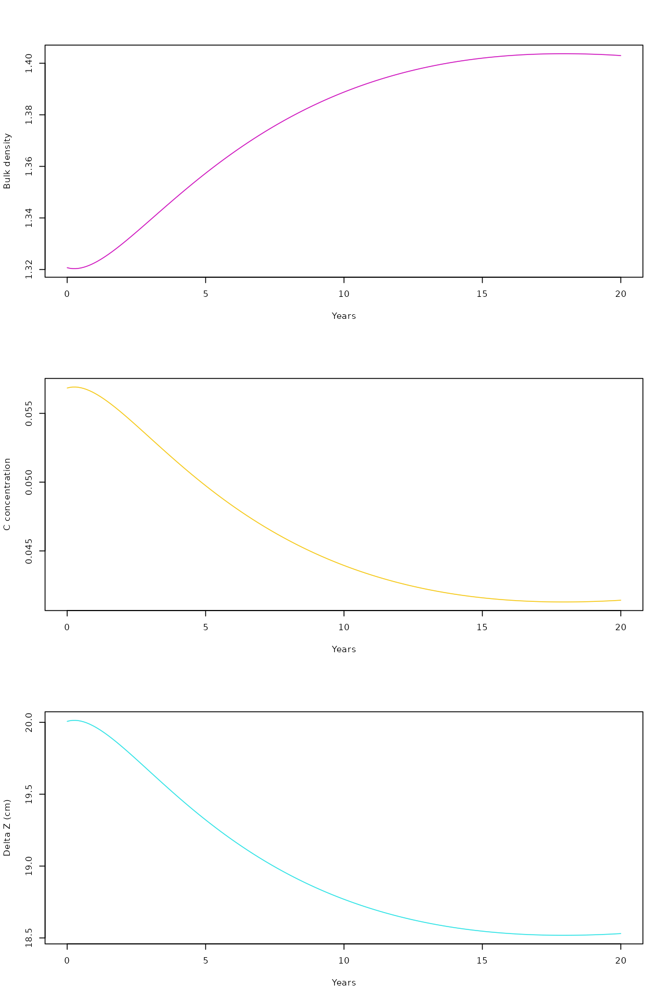

my-vignette.RmdThis poorly written vignette contains some working example of how to
run the model in its current state.
The code is organized in a series of functions:
library(Porous)
library(SoilR) #this should load automatically anyway since it is required by Porous
#> Loading required package: deSolve
#>
#> Attaching package: 'SoilR'
#> The following object is masked from 'package:deSolve':
#>
#> eulerFirst we create the model object:
modelObject<-Porous()This creates a model with the default parameters. The parameter values can also be specified by the user (when one value is not specified the parameter will have default value), such as:
modelObject<-Porous(ky=0.8, ko=0.00605,
kmix=0.9,
e=0.13,
Im=1.1, Ir=0.5,
F_prot=0.0,
phi_mac=0.2,
phi_min=1,
clay=0.2,
Delta_z_min=20,
gamma_o=1.2)Many values can be omitted, and the function will use the defaults.
In particular f_text_mic, if omitted, will be calculated
internally with a specific function, f_text_mic_func().
SoilR has an internal function designed to plot any
model (but fluxes do not always seem consistent in the
representation):
plotPoolGraph(modelObject)Now we can run the model, for wich we need to initialize the starting values
We can then run the model with the specific SoilR
function:
modrun0<-Model_by_PoolNames(smod=modelObject, times=times, initialValues=init)And, again relying on the specific SoilR function, we
can extract the C stocks and respiration fluxes:
Stocks<-getC(modrun0)
Resp<-getReleaseFlux(modrun0)Let’s see what object we created (by plotting just the first rows of it):
head(Resp)
#> [,1] [,2] [,3] [,4]
#> [1,] 0.8000000 0 -0.360000000 -6.300000
#> [2,] 0.7257902 0 -0.200615068 -4.817084
#> [3,] 0.6696608 0 -0.087480390 -3.684389
#> [4,] 0.6266788 0 -0.007528916 -2.819208
#> [5,] 0.5932938 0 0.048621137 -2.158377
#> [6,] 0.5669394 0 0.087728304 -1.653596Everything seems in order and we can proceed to plot:
par(mfrow=c(2,1), mar=c(4,4,0,1))
matplot(times, Stocks, type="l", lty=1, col=1:4, xlab=" ", ylab="Pool contents", bty="n")
legend("bottomright", c("My_mes", "Mo_mes", "My_mic", "Mo_mic"), lty=1, col=1:4, bty="n")
matplot(times, Resp, type="l", lty=1, col=1:2, xlab="Time", ylab="Respiration", bty="n")It is also possible to calculate the evolution of soil bulk densities
and soil C concentration based on the simulated C stocks.
The soil bulk density relies on the function gamma_b:
f_som(My_mic=Stocks[1:20,1],
Mo_mic=Stocks[1:20,2],
My_mes=Stocks[1:20,3],
Mo_mes=Stocks[1:20,4],
Delta_z_min=20,
phi_min=0.35,
gamma_m=1.1)
#> [1] 0.5051903 0.5144970 0.5212742 0.5262390 0.5298873 0.5325699 0.5345388
#> [8] 0.5359782 0.5370233 0.5377745 0.5383069 0.5386765 0.5389256 0.5390857
#> [15] 0.5391810 0.5392292 0.5392441 0.5392357 0.5392117 0.5391777While the soil C concentration on the function
f_som:
gamma_b(My_mic=Stocks[1:20,1],
Mo_mic=Stocks[1:20,2],
My_mes=Stocks[1:20,3],
Mo_mes=Stocks[1:20,4],
Delta_z_min=20,
phi_min=1,
gamma_o=1.2,
gamma_m=1.1,
f_agg=3,
phi_mac=0.2)
#> [1] 0.1700971 0.1719277 0.1732436 0.1741985 0.1748954 0.1754052 0.1757780
#> [8] 0.1760498 0.1762467 0.1763881 0.1764882 0.1765576 0.1766044 0.1766345
#> [15] 0.1766524 0.1766614 0.1766642 0.1766626 0.1766581 0.1766517All the above functions can be run with a wrapper,
run_Porous, that takes care of running the simulation and
calculating bulk density and C concentration:
results<-run_Porous(ky=0.8, ko=0.04,
kmix=0.02,
e=0.15,
Im=0.08, Ir=0.048,
F_prot=0.1,
phi_mac=0.04,
clay=0.2,
Delta_z_min=14.2,
gamma_o=1.2,
gamma_m=2.7,
proportion=NULL,
phi_min=0.35,
f_text_mic=0.5069,
f_agg=3,
init=c(My_mes=0.132, Mo_mes=0.507, My_mic=0.284, Mo_mic=0.579),
sim_length=20,
sim_steps=0.1)
head(results)
#> time My_mes.stocks Mo_mes.stocks My_mic.stocks Mo_mic.stocks My_mes.resp
#> 1 0.0 0.13200000 0.5070000 0.2840000 0.5790000 0.10560000
#> 2 0.1 0.12299153 0.5086716 0.2854283 0.5790569 0.09839323
#> 3 0.2 0.11480162 0.5102367 0.2868089 0.5791218 0.09184129
#> 4 0.3 0.10735329 0.5117052 0.2881459 0.5791940 0.08588263
#> 5 0.4 0.10058027 0.5130858 0.2894428 0.5792733 0.08046422
#> 6 0.5 0.09442165 0.5143863 0.2907027 0.5793591 0.07553732
#> Mo_mes.resp My_mic.resp Mo_mic.resp f_som_sim gamma_b_sim Delta_z_sim
#> 1 0 0.003040000 0.001440000 0.05684442 1.320691 20.00694
#> 2 0 0.003248734 0.001407707 0.05663550 1.321741 19.98663
#> 3 0 0.003440146 0.001377702 0.05645050 1.322672 19.96864
#> 4 0 0.003615853 0.001349777 0.05628720 1.323495 19.95277
#> 5 0 0.003777251 0.001323750 0.05614365 1.324219 19.93883
#> 6 0 0.003925621 0.001299455 0.05601807 1.324854 19.92663Results can be accessed as plotted as a data frame:
range_stocks<-range(results[,2:5])
plot(results$time, results$My_mes.stocks, ylim=c(-2,range_stocks[2]), type="l", col=1, xlab="Years", ylab="C stocks")
lines(results$time, results$Mo_mes.stocks, ylim=range_stocks, type="l", col=2)
lines(results$time, results$My_mic.stocks, ylim=range_stocks, type="l", col=3)
lines(results$time, results$Mo_mic.stocks, ylim=range_stocks, type="l", col=4)
legend("bottomright", c("My_mes", "Mo_mes", "My_mic", "Mo_mic"), lty=1, col=1:4, bty="n")
The run_Porous: function, on top of the simulation of C
stocks from the main model function porous, gives also the
simulated evolution of bulk density, the C concentration and layer
thickness:
par(mfrow=c(3,1))
plot(results$time, results$gamma_b_sim, type="l", col=6, xlab="Years", ylab="Bulk density")
plot(results$time, results$f_som_sim, type="l", col=7, xlab="Years", ylab="C concentration")
plot(results$time, results$Delta_z_sim, type="l", col=5, xlab="Years", ylab="Delta Z (cm)")
A diagnostic function to check the mass balance of the model (sed for development) is also available:
mass_balance(results, Im=0.08, Ir=0.048, sim_length=100)
#> $`C balance soil`
#> [1] 7.953207
#>
#> $`C balance inputs`
#> [1] 12.8
#>
#> $`mass balance`
#> [1] FALSE